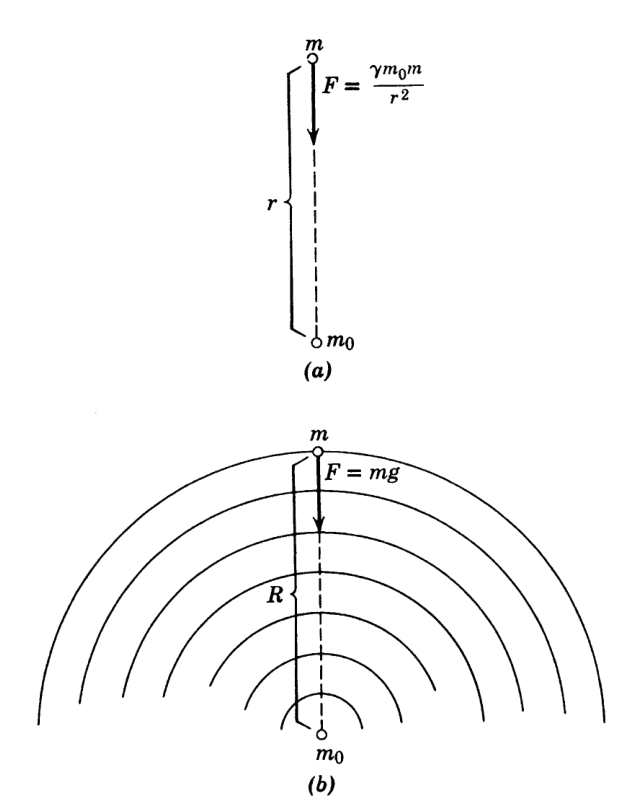

作为无约束运动的例子，考虑一个质点在另一物体的引力场中的运动。
a. 牛顿万有引力定律
开普勒根据第谷·布拉赫精确的观测描述了行星的运动，引导牛顿提出任意两个质点间引力的普遍定律。设质点 P 0 = ( x 0 , y 0 ) P_0=(x_0,y_0) P 0 = ( x 0 , y 0 ) P = ( x , y ) P=(x,y) P = ( x , y ) m 0 , m m_0,m m 0 , m r = ( x − x 0 ) 2 + ( y − y 0 ) 2 r=\sqrt{(x-x_0)^2+(y-y_0)^2} r = ( x − x 0 ) 2 + ( y − y 0 ) 2 P 0 P_0 P 0 P P P F \mathbf F F P P 0 → \overrightarrow{PP_0} P P 0 ∣ F ∣ = γ m 0 m / r 2 |\mathbf F|=\gamma m_0m/r^2 ∣ F ∣ = γ m 0 m / r 2 γ \gamma γ F \mathbf F F r r r P P 0 → \overrightarrow{PP_0} P P 0
F = γ m 0 m r 3 P P 0 → = ( γ m 0 m ( x 0 − x ) r 3 , γ m 0 m ( y 0 − y ) r 3 ) .
\mathbf F=\frac{\gamma m_0m}{r^3}\overrightarrow{PP_0}
=\left(\frac{\gamma m_0m(x_0-x)}{r^3},\frac{\gamma m_0m(y_0-y)}{r^3}\right).
F = r 3 γ m 0 m P P 0 = ( r 3 γ m 0 m ( x 0 − x ) , r 3 γ m 0 m ( y 0 − y ) ) . 这一定律说的是质点，即可以忽略实际大小而看作质量集中于一点的物体（图 4.47）。对彼此距离远大于自身直径的天体来说，这样的假设很自然。牛顿还证明，即使质量 m 0 m_0 m 0 m m m m 0 m_0 m 0 P 0 P_0 P 0

图 4.47 (a) 两个质点间的牛顿引力；(b) 地球的引力 把地球看作由各层密度均匀的同心球壳构成，已相当准确。因此地球对其表面质量 m m m P 0 P_0 P 0 γ m 0 m / R 2 \gamma m_0m/R^2 γ m 0 m / R 2 R R R m 0 m_0 m 0 γ m 0 m / R 2 = m g \gamma m_0m/R^2=mg γ m 0 m / R 2 = m g g g g g = γ m 0 / R 2 g=\gamma m_0/R^2 g = γ m 0 / R 2
由牛顿基本定律，在位于 P 0 P_0 P 0 m 0 m_0 m 0 P P P
x ¨ = γ m 0 ( x 0 − x ) r 3 , y ¨ = γ m 0 ( y 0 − y ) r 3 .
\ddot x=\frac{\gamma m_0(x_0-x)}{r^3},\qquad \ddot y=\frac{\gamma m_0(y_0-y)}{r^3}.
x ¨ = r 3 γ m 0 ( x 0 − x ) , y ¨ = r 3 γ m 0 ( y 0 − y ) . 再作一个简化假设：m 0 m_0 m 0 m m m P P P P 0 P_0 P 0 P 0 P_0 P 0 P 0 P_0 P 0 P = ( x , y ) P=(x,y) P = ( x , y )
x ¨ = − γ m 0 x r 3 , y ¨ = − γ m 0 y r 3 , r = x 2 + y 2 . (51)
\ddot x=-\frac{\gamma m_0x}{r^3},\qquad \ddot y=-\frac{\gamma m_0y}{r^3},\qquad
r=\sqrt{x^2+y^2}.\tag{51}
x ¨ = − r 3 γ m 0 x , y ¨ = − r 3 γ m 0 y , r = x 2 + y 2 . ( 51 ) b. 绕引力中心的圆周运动
我们不求这些微分方程最一般的解（众所周知，这种解对应的轨道是以引力中心为一个焦点的圆锥曲线），只考察与方程相容的两种最简单的运动：绕原点的匀速圆周运动，以及沿从原点出发的半径的运动。在半径为 a a a r = a r=a r = a x = a cos ω t , y = a sin ω t x=a\cos\omega t,\ y=a\sin\omega t x = a cos ω t , y = a sin ω t ω \omega ω T T T P P P T = 2 π / ω T=2\pi/\omega T = 2 π / ω x ˙ = − a ω sin ω t , y ˙ = a ω cos ω t \dot x=-a\omega\sin\omega t,\ \dot y=a\omega\cos\omega t x ˙ = − aω sin ω t , y ˙ = aω cos ω t
v = x ˙ 2 + y ˙ 2 = a ω = 2 π a T . (52)
v=\sqrt{\dot x^2+\dot y^2}=a\omega=\frac{2\pi a}T.\tag{52}
v = x ˙ 2 + y ˙ 2 = aω = T 2 πa . ( 52 ) 加速度分量为 x ¨ = − a ω 2 cos ω t = − ω 2 x , y ¨ = − a ω 2 sin ω t = − ω 2 y \ddot x=-a\omega^2\cos\omega t=-\omega^2x,\ \ddot y=-a\omega^2\sin\omega t=-\omega^2y x ¨ = − a ω 2 cos ω t = − ω 2 x , y ¨ = − a ω 2 sin ω t = − ω 2 y ω 2 = γ m 0 / a 3 \omega^2=\gamma m_0/a^3 ω 2 = γ m 0 / a 3
a 3 = γ m 0 ω 2 = γ m 0 4 π 2 T 2 , (53)
a^3=\frac{\gamma m_0}{\omega^2}=\frac{\gamma m_0}{4\pi^2}T^2,\tag{53}
a 3 = ω 2 γ m 0 = 4 π 2 γ m 0 T 2 , ( 53 ) 运动方程 (51) 就得到满足。这就是圆周运动情形下的开普勒第三定律：行星到太阳距离的立方与其周期的平方成正比。
以地球为引力中心，质量为 m 0 m_0 m 0 R R R γ m 0 = g R 2 \gamma m_0=gR^2 γ m 0 = g R 2 a 3 = g R 2 T 2 / ( 4 π 2 ) a^3=gR^2T^2/(4\pi^2) a 3 = g R 2 T 2 / ( 4 π 2 ) a = R ∼ 3963 a=R\sim3963 a = R ∼ 3963 T = 2 π R / g ∼ 1.4 T=2\pi\sqrt{R/g}\sim1.4 T = 2 π R / g ∼ 1.4
v = 2 π R T = R g ∼ 27,000 英尺/秒 . (54)
v=\frac{2\pi R}T=\sqrt{Rg}\sim 27{,}000\ \text{英尺/秒}.\tag{54}
v = T 2 π R = R g ∼ 27 , 000 英尺 / 秒 . ( 54 ) 把这颗卫星的周期同月球的周期 27.32 27.32 27.32 a a a R R R 2 / 3 2/3 2/3
a = ( 27.32 × 24 1.4 ) 2 / 3 R ∼ 60 R ∼ 240,000 英里 ,
a=\left(\frac{27.32\times24}{1.4}\right)^{2/3}R\sim60R\sim240{,}000\ \text{英里},
a = ( 1.4 27.32 × 24 ) 2/3 R ∼ 60 R ∼ 240 , 000 英里 , 与实际平均距离很吻合。
c. 径向运动。逃逸速度
第二种情形是质点沿引力中心出发的一条射线（如 x x x y = 0 , x = r y=0,\ x=r y = 0 , x = r x ¨ = − γ m 0 / x 2 \ddot x=-\gamma m_0/x^2 x ¨ = − γ m 0 / x 2 s ¨ = f ( s ) \ddot s=f(s) s ¨ = f ( s ) x ˙ \dot x x ˙
x ¨ x ˙ = − γ m 0 x ˙ x 2 , d d t ( 1 2 x ˙ 2 ) = d d t ( γ m 0 x ) .
\ddot x\dot x=-\gamma m_0\frac{\dot x}{x^2},\qquad
\frac{d}{dt}\left(\tfrac12\dot x^2\right)=\frac{d}{dt}\left(\frac{\gamma m_0}x\right).
x ¨ x ˙ = − γ m 0 x 2 x ˙ , d t d ( 2 1 x ˙ 2 ) = d t d ( x γ m 0 ) . 所以运动中 1 2 x ˙ 2 − γ m 0 / x \frac12\dot x^2-\gamma m_0/x 2 1 x ˙ 2 − γ m 0 / x h h h x x x t t t
d t d x = 1 x ˙ = ± 1 2 h + 2 γ m 0 / x , t = t 0 ± ∫ x 0 x d ξ 2 h + 2 γ m 0 / ξ .
\frac{dt}{dx}=\frac1{\dot x}=\pm\frac1{\sqrt{2h+2\gamma m_0/x}},\qquad
t=t_0\pm\int_{x_0}^{x}\frac{d\xi}{\sqrt{2h+2\gamma m_0/\xi}}.
d x d t = x ˙ 1 = ± 2 h + 2 γ m 0 / x 1 , t = t 0 ± ∫ x 0 x 2 h + 2 γ m 0 / ξ d ξ . 用第三章的方法容易算出此积分，这里从略。若在 t 0 = 0 t_0=0 t 0 = 0 x 0 x_0 x 0 h = − γ m 0 / x 0 h=-\gamma m_0/x_0 h = − γ m 0 / x 0 x = 0 x=0 x = 0
t = ∫ 0 x 0 d ξ 2 γ m 0 ( 1 / ξ − 1 / x 0 ) = π 2 x 0 3 2 γ m 0 .
t=\int_0^{x_0}\frac{d\xi}{\sqrt{2\gamma m_0(1/\xi-1/x_0)}}
=\frac\pi2\sqrt{\frac{x_0^3}{2\gamma m_0}}.
t = ∫ 0 x 0 2 γ m 0 ( 1/ ξ − 1/ x 0 ) d ξ = 2 π 2 γ m 0 x 0 3 . 由开普勒定律，这个时间是质点在距离 x 0 x_0 x 0 1 / 32 \sqrt{1/32} 1/32
考察质点在何种条件下能逃逸至无穷远时，关系 1 2 x ˙ 2 − γ m 0 / x = h \frac12\dot x^2-\gamma m_0/x=h 2 1 x ˙ 2 − γ m 0 / x = h 1 2 x ˙ 2 ≥ 0 \frac12\dot x^2\ge0 2 1 x ˙ 2 ≥ 0 x → ∞ x\to\infty x → ∞ h h h 1 2 x ˙ 2 − γ m 0 / x ≥ 0 \frac12\dot x^2-\gamma m_0/x\ge0 2 1 x ˙ 2 − γ m 0 / x ≥ 0 x = a x=a x = a v v v 1 2 v 2 − γ m 0 / a ≥ 0 \frac12v^2-\gamma m_0/a\ge0 2 1 v 2 − γ m 0 / a ≥ 0 v = 2 γ m 0 / a v=\sqrt{2\gamma m_0/a} v = 2 γ m 0 / a 逃逸速度 v e v_e v e a = R , γ m 0 = g R 2 a=R,\ \gamma m_0=gR^2 a = R , γ m 0 = g R 2
v e = 2 g R ∼ 37,000 英尺/秒 .
v_e=\sqrt{2gR}\sim37{,}000\ \text{英尺/秒}.
v e = 2 g R ∼ 37 , 000 英尺 / 秒 . 由第 416 页 (54)，逃逸速度恰为近地圆轨道卫星速率的 2 \sqrt2 2 v e v_e v e
译者注 这里“逃逸”指距离能无限增大。当 h = 0 h=0 h = 0